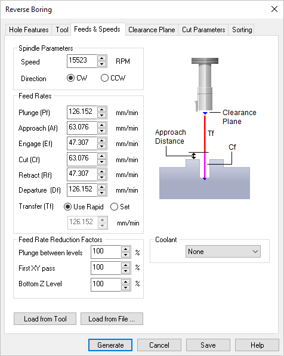

The following dialog is similar for 2 Axis Reverse Boring operations and allows you to select the appropriate Feeds & Speeds for the current operation. On this tab, Spindle Parameters and Feed Rates can be specified. Speeds & Feeds can also be loaded from a File or from the Tool.
 Feeds & Speeds tab, Reverse Boring Operations |
These parameters refer to the spindle on your machine. Spindle Speed This is the rotational Speed (S) of the milling spindle expressed in RPM. Spindle Direction (CW) This sets the spindle rotation to be Clockwise (CW). Spindle Direction (CCW) This sets the spindle rotation Direction to be Counter Clockwise (CCW). |
These are the feedrates (in Units/Min) that will be applied to the current toolpath operation. If the values are currently populated from your Tool definition (Load from Tool), Feeds & Speeds table (Load from File) or from your Knowledge Base, you can override them for this operation. Plunge (Pf) This is the rate is the feed before the tool starts to engage in material. This is always vertical. Approach (Af) This is the Approach (Af) feedrate (in Units/Min) used to prepare the cutter just before it starts to Engage into material for cutting. Approach motions are dependent on the method of machining. Engage (Ef) This is the Engage (Ef) feedrate (in Units/Min) used when the tool is Engaging the material just prior to cutting. Cut (Cf) This is the Cut (Cf) feedrate (in Units/Min) used when the tool is Cutting material. Retract (Rf) This is the Retract (Rf) feedrate (in Units/Min), when the tool is performing a Retract move away from material. Departure (Df) The is the feedrate (in Units/Min), when the tool Departs from the material. Transfer (Tf) Use Rapid This is the Transfer (Tf) feedrate (in Units/Min) used for Transfer motions. If you select Use Rapid the posted G-Code will output a rapid motion (G0) with no feed rate. Note: For more accurate machining time estimates, use the Set option and enter the feed rate to use. Transfer (Tf) Set This is the Transfer (Tf) feedrate (in Units/Min) used for Transfer motions. Select Set to enter an actual feedrate value for rapid motions (G0). This is only used for calculating the estimated machining time. |
This section of the dialog allows you to specify Feed Rate Reduction Factors for specific tool motions. Plunge between levels This is a percentage of the Cut (Cf) feedrate to use when the tool is plunging between Z levels. First XY Pass This is a percentage of the Cut (Cf) feedrate to use on the first XY cut motion when the toolpath uses the full width of the cutter. |
Here you can override the Coolant that is specified by the Tool. Coolant can be set to Flood, Mist, Through or Air. Coolant codes are defined in the post processor generator under Misc tab. Coolant Off is also supported as a variable that can be added where needed using the post-processor generator.  Coolant selections available |
Load the Feed & Speeds values that are saved with the currently selected Tool. See: Create/Edit Tools |
This loads the Feeds & Speeds values from the Feeds & Speeds Table file. This will display the Load Feeds from Table dialog box to make your selections.
|